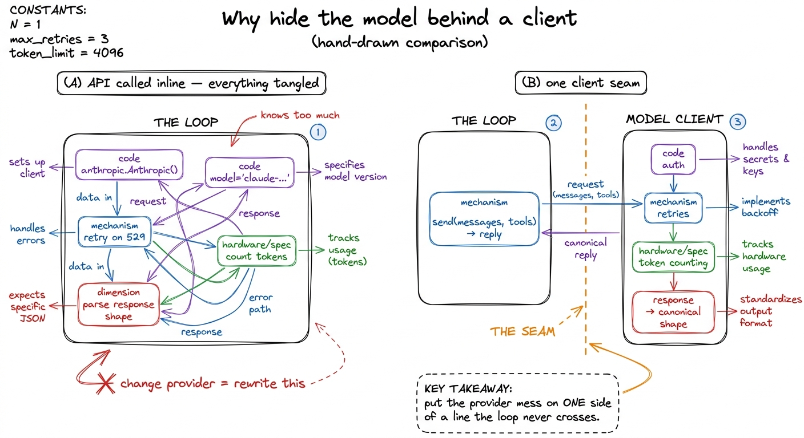
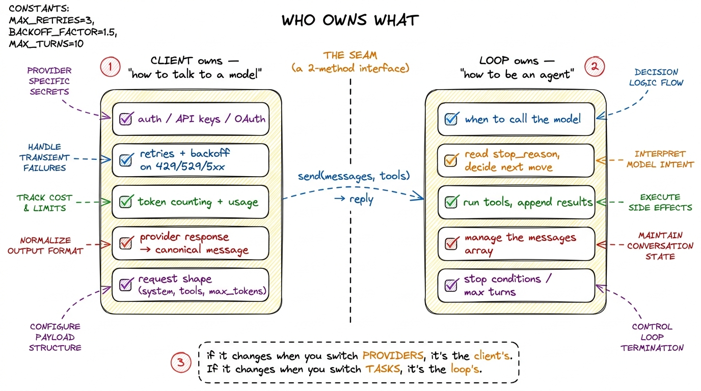
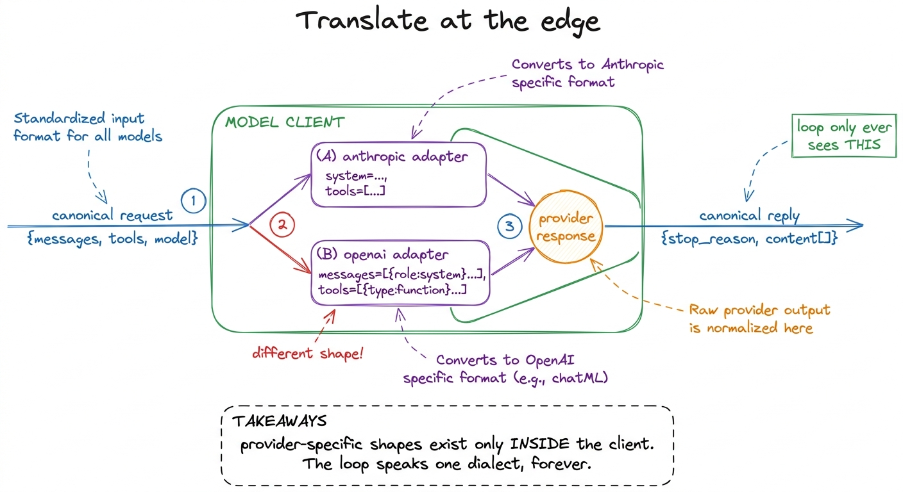
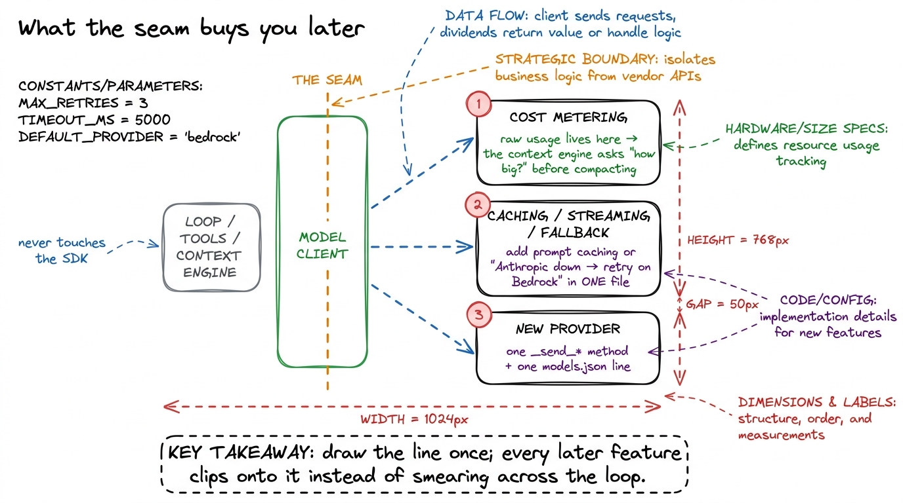

The model client & provider abstraction
In your first bare harness we cheated, and I told you we were cheating. We wrote client = anthropic.Anthropic() right there in the middle of the loop, hard-coded a model string, and moved on so nothing would distract from the one idea that mattered. That was the right call for teaching the loop. It is the wrong call for a harness you intend to keep. In this chapter we pay off that debt: we pull the model behind one thin interface, and in doing so we draw the single most important boundary in the whole system — the line between the model and everything the harness does with it.
The payoff is concrete. By the end, swapping Anthropic for OpenAI, or Sonnet for a local Ollama model, becomes a config change, not a code change. But the deeper payoff is architectural clarity: once the client is a clean seam, you always know which side of it a given piece of code belongs on. That knowledge is what keeps a harness from turning to mud.
The problem with calling the API directly
Start with the naive version and watch it rot. When the model call lives inline in your loop, the loop ends up knowing far too much. It knows the provider's SDK. It knows the exact model string. When the request fails with a 529 overloaded, the loop is where you sprout a try/except and a time.sleep. When you want to log how many tokens each turn cost, the token bookkeeping goes... where? Next to the loop. When a teammate wants to try GPT-5 for a week, they are editing your loop.

figure rendering · Inline API calls leak provider details into the loop until swapping moThe symptom is easy to name: provider concerns are leaking into loop concerns. Every one of those responsibilities — auth, retries, token accounting, response parsing — is about talking to a model, not about running an agent. They have no business sitting next to the loop. So we give them a home.
One interface, and the pi lesson behind it
Here is the whole idea in one sentence: the harness talks to a model through a fixed, tiny interface, and a provider is just a config entry that gets slotted in behind that interface. This is exactly the pattern pi builds its whole model layer on. pi ships with "15+ providers, hundreds of models" — Anthropic, OpenAI, Google, Bedrock, Mistral, Groq, Ollama, OpenRouter, and more — and you add your own with a models.json entry, not a code change.
1 pi's philosophy is "primitives, not features": the core defines the primitive (a model you can call through a uniform interface) and providers plug in as data. That is why you can /model or Ctrl+L to switch models mid-session — the harness never hard-coded one to begin with. We are building the same primitive, just small enough to read in full.
When pi lets you switch models mid-session with a keystroke, that fluency is not magic; it is the direct reward for having drawn this boundary early.
Our version of models.json is deliberately boring:
{
"default": "sonnet",
"models": {
"sonnet": { "provider": "anthropic", "model": "claude-sonnet-4-6", "max_tokens": 4096 },
"opus": { "provider": "anthropic", "model": "claude-opus-4-8", "max_tokens": 8192 },
"gpt": { "provider": "openai", "model": "gpt-5", "max_tokens": 4096 },
"local": { "provider": "ollama", "model": "qwen2.5-coder", "base_url": "http://localhost:11434" }
}
}Nothing in the loop, the tools, or the context engine will ever read this file. Only the client will. That is the point.
What the client owns vs. what the loop owns
Before any code, let's be ruthless about the division of labor, because getting this line right is 80% of the value. The client owns everything about talking to the model. The loop owns everything about being an agent.

figure rendering · The dividing test: provider-specific concerns live in the client; agenHere is the litmus test I actually use. Ask of any line of code: would this change if I switched providers? If yes, it belongs in the client — auth, the SDK object, the retry codes, the shape of the request body, the parsing of the response. Ask instead: would this change if I switched tasks? If yes, it belongs in the loop — when to call, how to read stop_reason, which tools to run, how the messages array grows.
2 There is one genuinely blurry case: which model to use for a given turn is arguably a policy decision, not a talking-to-the-model detail. Real harnesses often let the loop (or an orchestrator) pass a model name per call — "use the cheap model for this summary, the strong one for the reasoning." We support that below by letting send take an optional model key. The client still owns how to reach that model; the loop owns which one.
Concretely, the client owns four jobs, and I want to name each so it doesn't sneak back into the loop later:
Auth. Reading ANTHROPIC_API_KEY or OPENAI_API_KEY from the environment, or running an OAuth flow, and holding the SDK object. The loop should never see a key.
Retries. Providers return 429 rate limited, 529 overloaded, and transient 5xxs constantly under load. The client retries these with exponential backoff so the loop only ever sees a clean success or a final, honest failure.
3 Retries here are the transport kind — resend the identical request when the provider hiccups. That is a different animal from the durability retries in self-healing loops, which replay whole agent steps after a crash. Keep them separate: the client heals the network, the harness heals the run.
Token counting. Every provider returns usage (input_tokens, output_tokens) on the response. The client is the natural place to tally it, because it is the only code that sees the raw response. The context engine will later ask the client "how big is this?" to decide when to compact — so the client also owns a count_tokens helper.
The request shape. Each provider wants the request assembled slightly differently — Anthropic takes system as a top-level field and tools as tools; OpenAI folds the system message into the messages array and calls them functions/tools with a different schema. The client translates our one internal request shape into whatever this provider needs, and translates the response back into our one canonical message shape.
That last job is the subtle one, so let's give it its own moment.
The canonical shape: translate at the edge
The reason a two-line provider swap is even possible is that the loop speaks exactly one dialect. It always sends a messages list and a tools list; it always gets back an object with a .stop_reason and a .content it can iterate for tool_use blocks. If OpenAI names things differently, that difference must die inside the client — never leak past the seam.

figure rendering · The client is a translator: it adapts the harness's one canonical requThe code: a client worth keeping
Now the interface. It is two methods. send does one turn; count_tokens sizes a message list. That's the entire contract the rest of the harness is allowed to depend on.
import os, time, json, anthropic, openai
class ModelClient:
def __init__(self, config_path="models.json"):
cfg = json.load(open(config_path))
self.models = cfg["models"]
self.default = cfg["default"]
self._anthropic = anthropic.Anthropic(api_key=os.environ["ANTHROPIC_API_KEY"])
self._openai = openai.OpenAI(api_key=os.environ.get("OPENAI_API_KEY"))
def send(self, messages, tools, model=None, system=""):
spec = self.models[model or self.default] # resolve the config entry
adapter = getattr(self, f"_send_{spec['provider']}")
return self._with_retries(lambda: adapter(spec, messages, tools, system))
# ---- provider adapters: the ONLY provider-specific code in the whole harness ----
def _send_anthropic(self, spec, messages, tools, system):
r = self._anthropic.messages.create(
model=spec["model"], max_tokens=spec["max_tokens"],
system=system, messages=messages, tools=tools,
)
return Reply(stop_reason=r.stop_reason, content=r.content,
usage=(r.usage.input_tokens, r.usage.output_tokens))
def _send_openai(self, spec, messages, tools, system):
msgs = [{"role": "system", "content": system}, *messages]
r = self._openai.chat.completions.create(
model=spec["model"], max_tokens=spec["max_tokens"],
messages=msgs, tools=to_openai_tools(tools),
)
return normalize_openai(r) # → the SAME Reply shape
def _with_retries(self, fn, tries=5):
for i in range(tries):
try:
return fn()
except anthropic.APIStatusError as e:
# retry only what's worth retrying: 429, 529, and transient 5xx.
# a 400/401/404 will never fix itself — surface it immediately.
if e.status_code not in (429, 529) and e.status_code < 500:
raise
if i == tries - 1:
raise
time.sleep(2 ** i) # 1, 2, 4, 8, 16s backoff
def count_tokens(self, messages, model=None):
spec = self.models[model or self.default]
# provider-specific; anthropic exposes a dedicated endpoint
return self._anthropic.messages.count_tokens(
model=spec["model"], messages=messages).input_tokensNotice Reply — a tiny dataclass with stop_reason, content, and usage. That is our canonical shape. _send_anthropic produces it directly because we happened to design the interface around Anthropic's response; _send_openai calls normalize_openai to convert into it. Either way, the loop receives the identical object and cannot tell which provider answered.
And now watch what the loop from the last chapter becomes. Barely anything changes, which is the whole point:
client = ModelClient() # reads models.json once
def run_agent(user_request, model=None):
messages = [{"role": "user", "content": user_request}]
while True:
reply = client.send(messages, TOOLS, model=model, system=SYSTEM_PROMPT)
messages.append({"role": "assistant", "content": reply.content})
if reply.stop_reason != "tool_use":
return text_of(reply)
# ... run tools, append tool_results, loop — exactly as beforeThe loop lost its try/except, lost its hard-coded model string, lost its knowledge of anthropic entirely. It gained an optional model argument it can pass through. To run the same agent on a local Ollama model, you now type run_agent(req, model="local") — or, as pi does it, hit a keystroke mid-session. No loop edit. That is the two-line swap made real.
Why the boundary matters more than it looks
It is tempting to file this under "nice refactor" and move on. Resist that. The client seam is load-bearing for three later layers, and skipping it now means retrofitting it under pressure later.

figure rendering · The client seam is not a one-time tidy-up — it is the single attachmenBecause the client is the only code that sees raw usage, it is the one honest place to meter cost and enforce budgets — the context engine leans on exactly this to decide when to compact. Because the client is the only code that touches the SDK, it is the one place to add prompt caching, streaming, or a fallback provider ("if Anthropic is down, retry on Bedrock") without any other file noticing.
4 A fallback provider is just a retry policy that swaps the config entry between attempts instead of resending to the same one — trivial to add here, and impossible to add cleanly if provider code is smeared across the loop. This is the concrete dividend of drawing the line early.
And because provider quirks are quarantined behind the adapters, supporting a new provider is a new _send_* method plus a models.json line — a bounded, testable change, not a hunt-and-replace through your whole codebase.
The general principle, which you will see again and again in this book, is this: push the parts that vary behind a narrow interface, and let the stable core speak one dialect. The model is the single most volatile dependency in a harness — new versions monthly, new providers weekly, prices and limits shifting under you. Wrapping it in a thin client is how you keep all that churn from ever reaching the loop, the tools, or the context engine. One brain, borrowed and swappable; one body, stable and yours.
With the model safely behind a seam, we can turn to the thing the loop actually does with the model's replies — running the tools it asks for, safely. Next we make those tools trustworthy: tool schemas as contracts.